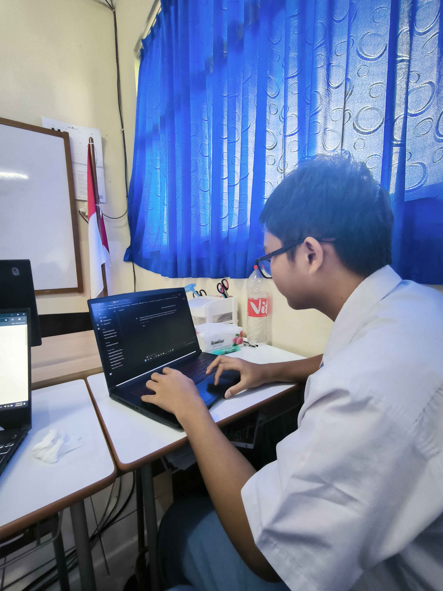

Belajar Programming #dirumahaja
Tetap Sehat!
Tetap Semangat!
Terkadang, hal-hal kecil yang kita lakukan setiap hari memiliki dampak yang lebih besar daripada yang kita bayangkan. Jangan pernah meremehkan kekuatan tindakan kecil yang konsisten.
Kelompok Kucing Penjajah
Anggota Kelompok
- Daniel
- Gwen Valerie
- Sabian
- Vincent Timothy Kurniawan

Mempersembahkan!
Anggota Kelompok
Berikut ini adalah anggota kelompok

Vincent Timothy
Sabian Putra
Daniel
Gwen Valerie
Dokumentasi
Galeri
Berikut ini adalah dokumentasi dari kelompok kami
